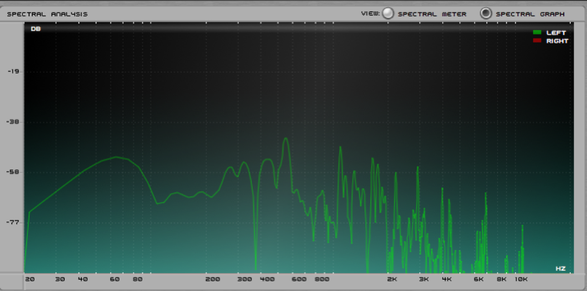

Sound and Music
An Introduction to Acoustics for Musicians
Why shoud we learn about sound?
All musicians work with sound in one fashion or another.
Despite this close working relationship with sound, many have little understanding of its properties.
We can benefit from an understanding of the mechanisms of sound, its objective measurements and the more subjective area of its perception.
Acoustics : The science of sound, or a general term to refer to hearing and sound
🔊 What is sound? 🔊
When we toss a pebble into water, we see a splash, followed by ripples ringing out from the splash point.
🔊 What is sound? 🔊
When we hear a sound, there is a splash in air.
Instead of water rippling away from the splash point, a sound event pushes air molecules to bump into one another.
After the molecules collide, they bounce away from each other, colliding with other molecule
🔊 What is sound? 🔊
🔊 What is sound? 🔊
When there is silence we say that the air is at equilibrium, or an undisturbed state
A sound event causes air pressure, or the density of air molecules, to alternate between bunching together and spreading out.
Compressed State: Air molecules at higher pressure levels (greater density) than equilibrium
Rarefied State: Air molecules at lower pressure levels (greater density) than equilibrium
What are sound waves?
Sound Waves: the sequence (or oscillation) of compressions and rarefactions in air pressure that we can perceive
Sound waves propagate outwards in expanding spheres.
Time Domain Plots
This oscillation of compressions and rarefactions in air pressure can be illustrated on a graph that plots sound pressure over time.

Physical Characteristics of Sound Waves
- Wavelength: the distance between similar points on a sound wave
- Frequency: how often (or quickly) the wave repeats itself
- Amplitude: how high and low the wave's oscillations are.
- Waveshape: the shape of the pressure changes on a time domain plot (we will dig into this later in the semester)
- Polarity: a wave's up or down orientation.
Each sound event creates its own unique combination of the above physical characteristics.
Properties of Musical Sounds
A musical event can be described by four properties. Each of these can be explored with descriptive terms (or objective terms)
- Pitch (Frequency)
- Volume (Amplitude)
- Timbre (Frequency Response/Spectrum)
- Duration in beats (Duration in Time)
Frequency/Pitch
- Frequency is how rapidly the air pressure oscillates between rarefactions and compressions
- We measure frequency in cycles per second or Hertz (Hz)
- How Humans perceive pitch is correlated with frequency.
Frequency/Pitch
- The faster the frequency is the higher we perceive pitch

Frequency/Pitch
- The slower the frequency is the lower we perceive pitch

Frequency/Pitch
- The range of human hearing is roughly from 20 Hz to 20,000 Hz
- More often written as 20 Kilohertz (kHz) (Metric prefixes can apply to Hz)
- The upper limit decreases with age and ear damage (most adults are in the 16-17 kHz range)
Amplitude/Volume
- As discussed earlier, amplitude is the amount of deviation in the air pressure from equilibrium
- Amplitude is perceived by humans as loudness and softness
Amplitude/Volume
- The less the amplitude is the softer we perceive the sound
Amplitude/Volume
- The more the amplitude is the louder we perceive the sound

Sine Tone
- Sine Tone: A perfectly periodic cycle that produces a single frequency
- Sine tones very rarely occur naturally.
Compare these two sound waves in terms of frequency and amplitude
Timbre/Spectrum
- A given sound will contain many different frequencies, all at different amplitudes
- Spectrum: is the set of frequencies in a given sound 